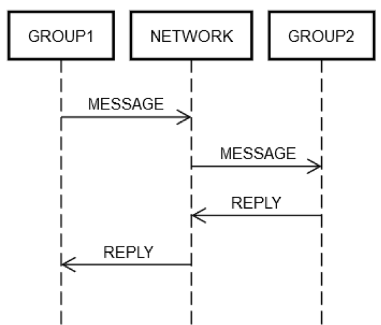

aws 的分布式系统相关挑战
原文：《分布式系统相关挑战》
早期的亚马逊系统的相关挑战
当服务器出现到第二台的时候，分布式系统的挑战就出现了：
- latencey
- scalablity
- 理解网络 API
- 数据编组和解组
- Paxos 算法的复杂性
随着系统的不断快速扩展和分布程度的不断提高，理论上的边缘情况成为了常态。所以小系统不出问题主要是因为分布程度不够高。
开发分布式实用程序计算服务（例如可靠的长途电话网络或 Amazon Web Services (AWS) 服务）比较困难。与其他形式的计算相比，分布式计算也更古怪，而且不够直观，因为它存在两个相互关联的问题。在分布式系统中，造成最大问题的是故障独立性和不确定性。在分布式系统中，除了大多数工程师习以为常的计算故障外，故障还会以许多其他方式出现。更糟糕的是，不可能时刻知晓某事项是否发生了故障。
分布式系统的类型
离线分布式系统
- 批处理系统
- 大数据分析集群
- 电影场景渲染农场
- 蛋白质折叠集群
这种离线系统没有对 request 和 response 之间的强实时要求。
虽然离线分布式系统实现起来并不容易，但它却几乎囊括了分布式计算的所有优点（可扩展性和容错能力），而且几乎没有缺点（复杂的故障模式和不确定性）。
软实时分布式系统
这些是必须不断产生或更新结果的重要系统，但是它们有一个相对充裕的时间窗口来执行这些操作。
- 搜索索引生成器：有 10 分钟到数小时的时间（具体取决于应用程序）处于离线状态，但不会对客户造成不当影响。
- 搜寻受损服务器的系统
- Elastic Compute Cloud (Amazon EC2) ：Amazon EC2 的角色必须将更新的凭证推送到（基本上）每个 EC2 实例，但是它有几个小时的时间来执行此操作，因为旧凭证在一段时间过后才会过期。
硬实时分布式系统
这也是最难实现的分布式系统。我们通常将其称之为请求/回复服务。请求和服务之间是人在等待，是一长串硬实时之间在等待。
在 Amazon，当我们考虑构建分布式系统时，首先想到的类型是硬实时系统-在所有公司都是这样，首先考虑请求/回复的硬实时系统。
然而，硬实时分布式系统是最难实现的，难以实现的原因是：无法预计请求的到达但又必须迅速对其做出响应（例如，客户正在热切等待响应）。
- 前端 Web 服务器
- 订单管道
- 信用卡交易
- 每个 AWS API
- 电话通讯
硬实时系统非常古怪
硬实时分布式系统的开发之所以奇怪是因为：请求/回复网络。我们并不是指 TCP/IP、DNS、套接字或其他此类协议的具体细节。这些主题可能难以理解，但与计算中的其他难题相似。
硬实时分布式系统的难点在于网络允许将消息从一个容错域（fault domain ）发送到另一个容错域（fault domain ）。发送消息似乎没有什么危害。但事实上，发送消息是一切变得比正常情况更加复杂的源头。
举一个简单的例子，我们来看一下 Pac-Man 实施中的以下代码段。它只在单台计算机上运行，不通过任何网络发送任何消息。
1 | |
现在，我们假设要开发此代码的联网版本，在一个单独的服务器上维护 board 对象的状态。对 board 对象（例如 findAll()）的每次调用都会导致在两台服务器之间发送和接收消息。
每当在两台服务器之间发送请求/回复消息时，从始至终一定会至少发生同样的一组八个步骤。要了解联网的 Pac-Man 代码，我们先来了解请求/回复消息收发的基础知识。
通过网络进行请求/回复消息收发
在这一节我们拆解了一个请求的全流程：
在一切正常的情况下，会执行以下步骤：
- POST REQUEST：CLIENT 将请求 MESSAGE 放到 NETWORK 上。
- DELIVER REQUEST：NETWORK 将 MESSAGE 传送到 SERVER。
- VALIDATE REQUEST：SERVER 验证 MESSAGE。
- UPDATE SERVER STATE：如有必要，SERVER 根据 MESSAGE 更新其状态。
- POST REPLY：SERVER 将回复 REPLY 放到 NETWORK 上。
- DELIVER REPLY：NETWORK 将 REPLY 传送到 CLIENT。
- VALIDATE REPLY：CLIENT 验证 REPLY。
- UPDATE CLIENT STATE：如有必要，CLIENT 根据 REPLY 更新其状态。
这只是往返一次就发生的诸多步骤！ 然而，这些步骤就是通过网络请求/回复通信的定义，无法跳过它们之中的任何一个步骤。例如，不可能跳过步骤 1。客户端必须以某种方式将 MESSAGE 放到网络 NETWORK 上。从物理角度讲，这意味着要通过网络适配器发送数据包，这会导致电子信号通过一系列路由器（构成 CLIENT 和 SERVER 之间的网络）在电线上传输。这与步骤 2 是分开的，因为步骤 2 可能由于自主原因出现问题，例如 SERVER 突然断电并且无法接受传入的数据包。这一逻辑同样适用于其余步骤。
因此，通过网络的单个请求/回复会将一件事（调用方法）分解为八件事。更糟糕的是，如上所述，CLIENT、SERVER 和 NETWORK 可能会彼此独立地发生故障**（三个实体，独立故障）**。工程师的代码必须处理上文提及的任何步骤发生的故障。典型的工程设计中很少会这样做。要想知晓原因，我们先来了解一下单机版代码中的以下表达式。
1 | |
从技术角度讲，即使 board.find 的实施本身没有错误，这段代码在运行时也会以一些古怪的方式发生故障。例如，CPU 可能在运行时自发过热。计算机的电源也可能自发地出现故障。内核可能出现恐慌。内存可能已满，无法创建 board.find 想要创建的某些对象。或者，它正在运行的计算机上的磁盘可能已满，board.find 无法更新某些统计文件，然后返回错误（即使可能不应该这样做）。伽马射线可能击中了服务器并剐蹭到 RAM。但是，在大多数情况下，工程师们并不担心这些问题。例如，单元测试永远不会涵盖“如果 CPU 发生故障”的情况，同时也很少涉及内存不足的情况。
在常见的工程设计中，这些类型的故障发生在一台计算机上；即一个容错域。例如，如果 board.find 方法由于 CPU 自发过热而发生故障，则可以肯定地说，整个计算机都处于故障状态。即使是从概念上也不可能处理该错误。可以对上文列出的其他类型的错误做出类似的假设。您可以尝试为其中一些情况编写测试，但是对于典型的工程设计来说，这毫无意义。如果确实发生了这些故障，可以肯定所有其他项也会发生故障。从技术角度讲，我们称他们共担命运。命运共担可极大地减少工程师必须处理的不同故障模式。
注释：在大多数情况下，耦合于共享资源的逻辑假设故障只有一个：逻辑域不可服务/响应。
硬实时分布式系统中的故障处理模式
硬实时分布式系统工程师必须对网络故障的所有方面都进行测试，因为服务器和网络不会共担命运。与单台计算机的情况不同，如果网络出现故障，客户端计算机将继续工作。如果远程计算机出现故障，客户端计算机将继续工作，如此等等。
注释：不共担命运意味着，另一个实体会继续工作。
为了详尽测试上文所述的请求/回复步骤的故障情况，工程师必须假定每个步骤都可能发生故障。而且，他们必须确保客户端和服务器上的代码始终能够针对这些故障正确运行。
让我们看一下出现问题的请求/回复的一次往返操作：
- POST REQUEST 失败：NETWORK 无法传送消息（例如，中间路由器恰好不合时宜地崩溃），或者 SERVER 明确拒绝了该消息。
- DELIVER REQUEST 失败：NETWORK 已成功将 MESSAGE 传送到 SERVER，但是 SERVER 收到 MESSAGE 后立即崩溃。
- VALIDATE REQUEST 失败：SERVER 判定 MESSAGE 无效。原因可能无所不有。例如，数据包损坏、软件版本不兼容，或者客户端或服务器出现错误。
- UPDATE SERVER STATE 失败：SERVER 尝试更新其状态，但无法更新。
- POST REPLY 失败：无论尝试回复成功还是失败，SERVER 都可能无法发布回复。例如，它的网卡可能恰好不合时宜地过热。
- DELIVER REPLY 失败：即使 NETWORK 在上文的步骤中可以正常运行，NETWORK 仍可能无法像上文描述的那样将 REPLY 传送给 CLIENT。
- VALIDATE REPLY 失败：CLIENT 判定 REPLY 无效。
- UPDATE CLIENT STATE 失败：CLIENT 可能会收到消息 REPLY，但是无法更新其自身的状态、无法理解消息（由于不兼容）或由于其他原因而失败。
正是这些故障模式使得分布式计算变得困难重重。我将其称之为天启的八种故障模式。鉴于这些故障模式，让我们再次从 Pac-Man 代码中查看该表达式。
1 | |
该表达式扩展为以下客户端活动：
- 在网络上发布一条消息（例如 {action: “find”, name: “pacman”, userId: “8765309”}），该网络寻址到 Board 计算机。
- 如果网络不可用，或者显式拒绝了与 Board 计算机的连接，则会引发错误。这种情况有些特殊，因为客户端确切地知道服务器计算机可能未收到该请求。
- 等待回复。
- 如果从未收到回复，则超时。在此步骤中，超时意味着请求的结果为 UNKNOWN。它可能发生过也可能没发生过。客户端必须正确处理 UNKNOWN。
- 如果收到回复，则确定是成功回复、错误回复还是回复难以理解/发生损坏。
- 如果不是错误，则解组响应并将其转换为代码可以理解的对象。
- 如果是错误或无法理解的回复，则会引发异常。
- 无论如何处理异常，都必须确定应重试该请求还是放弃并停止操作。
该表达式还会启动以下服务器端活动：
- 收到请求（这可能根本不会发生）。
- 验证请求。
- 查找用户以查看该用户是否还处于活动状态。（服务器可能已经放弃该用户，因为它很长时间没有收到来自用户的任何消息。）
- 更新用户的保持活动表，以便服务器知道他们（可能）仍然还在。
- 查找用户的位置。
- 发布包含类似 {xPos: 23, yPos: 92, clock: 23481984134} 的响应。
- 任何其他服务器逻辑都必须正确处理客户端的后续影响。例如，无法接收消息、接收消息但不理解消息、接收消息但消息崩溃或成功处理消息。
总之，普通代码中的一个表达式在硬实时分布式系统代码中变成了十五个额外的步骤（8个客户端活动+7个服务端活动）。发生这种扩展的原因是客户端和服务器之间的每次往返通信在八个不同的点都有可能发生故障。任何表示网络往返的表达式（例如 board.find(“pacman”)），都会产生以下结果。
这种设计源于分布式计算的本质：服务端无法感知客户端状态。
1 | |
这种复杂性是难以避免的。如果代码无法正确处理所有情况，则该服务最终将以奇怪的方式发生故障。想象一下，若尝试为客户端/服务器系统（例如 Pac-Man 示例）可能遇到的所有故障模式编写测试，难度何其之大！
注释：为何客户端比服务端多一步？在分布式通信中，服务端无法感知客户端的完整状态（例如是否超时、是否重试）。因此，客户端必须额外负责：
-故障分类与恢复策略：服务端仅返回错误码（如 HTTP 500），而客户端需根据错误类型（网络超时、服务崩溃、逻辑错误）决定是否重试、降级或终止。
- 处理 UNKNOWN 状态：超时意味着服务端状态未知，客户端需设计幂等操作（如唯一请求 ID）避免重复执行导致数据不一致。
测试硬实时分布式系统
测试单机版本的 Pac-Man 代码段相对比较简单。创建一些不同的 Board 对象，将它们置于不同的状态，创建一些不同状态的 User 对象，如此等等。工程师会特别认真地考虑边缘条件，可能会使用生成式测试或模糊测试。
在 Pac-Man 代码中，有四个地方使用 board 对象。在分布式 Pac-Man 中，该代码中有四个点具有五种不同的可能结果，如上文所示（POST_FAILED、RETRYABLE、FATAL、UNKNOWN 或 SUCCESS）。这极大地增加了测试的状态空间。例如，硬实时分布式系统的工程师必须处理许多排列。假设对 board.find() 调用失败，并显示 POST_FAILED。那么，您必须测试当它失败并显示 RETRYABLE 时会发生什么，然后必须测试当它失败并显示 FATAL 时会发生什么，如此等等。
但即使这样，测试也是不够的。在常规代码中，工程师可能会认为，如果 board.find() 有效，那么对 board 的下一个调用 board.move() 也将有效。在硬实时分布式系统工程中，没有这样的保证。服务器计算机随时都有可能发生独立故障。最终，工程师每次调用 board 时都必须针对所有五种情况编写测试。假设工程师提出了 10 种可以在单机版 Pac-Man 中进行测试的情况。但是，在分布式系统版本中，他们必须针对每种情况测试 20 次。这意味着测试矩阵会从 10 膨胀到 200！
但是等等，情况不止如此。工程师也可能拥有服务器代码。无论客户端、网络和服务器端出现怎样的错误组合，工程师都必须进行测试，以便客户端和服务器最终不会处于损坏状态。服务器代码可能如下所示。
1 | |
需要测试四个服务器端函数。假设一台计算机上的每个函数都需进行五次测试，那么就需要进行 20 次测试。由于客户端将多条消息发送到同一服务器，因此测试应模拟不同请求的序列，以确保服务器保持稳健运行。请求的示例包括 find、move、remove 和 findAll。
假设一个构造有 10 种不同的场景，每种场景平均有 3 个调用，那么就需要进行超过 30 次测试。此外，一个场景还需要测试故障案例。对于每一个测试，您都需要模拟以下情况：如果客户端收到四种失败类型（POST_FAILED、RETRYABLE、FATAL 和 UNKNOWN）中的任何一种，然后使用无效请求再次调用服务器，将会发生什么情况。例如，客户端可能成功调用了 find，但是在调用 move 时，有时会收到 UNKNOWN。然后出于某种原因，它可能会再次调用 find。服务器是否可以正确处理这种情况？ 也许可以处理。但是如果不进行测试，您就无从知晓。因此，与客户端代码一样，服务器端测试矩阵的复杂性也会呈爆炸式增长。
处理未知的未知情况
如果要考虑分布式系统可能会遇到的所有故障排列，尤其是在有多个请求时，这简直难以想象。我们发现处理分布式工程设计的一种方法是不信任任何事物。除非不会引发网络不通信，否则每一行代码都可能无法达到预期的效果。
也许最难处理的是上一节中所述的 UNKNOWN 错误类型。客户端无法时时知晓请求是否成功。也许它确实移动了 Pac-Man（或者在银行服务中，从用户的银行账户中提款），或者也许没有。工程师应该如何处理此类情形？ 这很难处理，因为工程师是人，而人往往要在真正的不确定性中挣扎。人类习惯于像下面这样查看代码。
1 | |
人类理解此代码，是因为它执行了它应该执行的操作。分布式版本的代码让人类苦不堪言，它会将一些工作分配给服务。
1 | |
人类几乎不可能弄清楚如何正确处理 UNKNOWN。UNKNOWN 的真正含义为何？ 是否应重试代码？ 如果应该，要重试多少次？ 重试之间应等待多长时间？ 当代码有副作用时，情况甚至会更糟。在单台计算机上运行的预算应用程序内部，从账户中提取资金非常容易，如以下示例所示。
1 | |
但是，由于出现 UNKNOWN，该应用程序的分布式版本很古怪。
1 | |
在分布式工程设计中，要想知道为什么事情并非总如表现的那样，就需要弄清楚如何处理 UNKNOWN 错误类型。
注释：上面的两个例子说明，单机版程序没有 unkonwn 错误，而分布式系统不仅有 unknown 错误，而且还不能准确理解 unknown、处理 unknow。
硬实时分布式系统群（herd）
天启（apocalypse，此处应指的是毁灭）的八种故障模式可以发生在分布式系统中的任何抽象层。上文的示例仅限于一台客户端计算机、一个网络和一台服务器计算机。即使在这种简单的场景中，故障状态矩阵的复杂性也会呈爆炸式增长。与单台客户端计算机示例相比，实时分布式系统具有更复杂的故障状态矩阵。实时分布式系统由多台计算机组成，可以在多个抽象层上进行查看：
- 个别计算机（Individual machines）
- 计算机组（Groups of machines）
- 计算机组群（Groups of groups of machines）
- 其他（潜在）（And so on (potentially)）
例如，在 AWS 上构建的服务可能会将专用于处理（dedicated to handling ）特定可用区资源（resources that are within a particular Availability Zone）的计算机分成一组（group together）。可能还会有另外两组用于处理另外两个可用区的计算机。然后，可以将这些组划分到一个 AWS 区域组（Region group）。而且，该区域组（逻辑上）可与其他区域组进行通信。然而，即使在这一更高、更合乎逻辑的抽象层，仍然会出现所有相同的问题。
注释：组是按照可用区资源来 partition/group togetger 出来的。
假设服务已将某些服务器划分到一个逻辑组 GROUP1。GROUP1 组有时可能会将消息发送到另一组服务器 GROUP2。这是递归分布式工程设计的一个示例。上文所述的所有相同的网络故障模式在此都适用。假设 GROUP1 想要向 GROUP2 发送请求。如下图所示，两台计算机的请求/回复交互就像上文所述的单台计算机一样。
无论如何，GROUP1 中的某些计算机必须在（逻辑上）寻址到 GROUP2 的网络 NETWORK 上放置一条消息。GROUP2 中的某些计算机必须处理该请求等等。GROUP1 和 GROUP2 是由计算机组组成的这一事实并未改变基本原则。GROUP1、GROUP2 和 NETWORK 仍然可以彼此独立发生故障。
然而，这只是组级视图。每个组中还存在计算机到计算机级别的交互。例如，GROUP2 的结构可能如下图所示。

无论如何，GROUP1 中的某些计算机必须在（逻辑上）寻址到 GROUP2 的网络 NETWORK 上放置一条消息。GROUP2 中的某些计算机必须处理该请求等等。GROUP1 和 GROUP2 是由计算机组组成的这一事实并未改变基本原则。GROUP1、GROUP2 和 NETWORK 仍然可以彼此独立发生故障。
然而，这只是组级视图。每个组中还存在计算机到计算机级别的交互。例如，GROUP2 的结构可能如下图所示。
首先，通过负载均衡器将发送到 GROUP2 的消息发送到组中的一台计算机（可能是 S20）。系统设计人员知道 S20 在 UPDATE STATE 阶段可能会发生故障。因此，S20 可能需要将该消息传递给至少一台其他计算机，要么是同组的计算机，要么是其他组的计算机。S20 实际上是如何做到的？ 通过发送请求/回复消息，比如发送给 S25，如下图所示。
因此，S20 正在递归地执行联网。同样的八个故障可能会再次各自独立地发生。分布式工程设计发生两次，而不是一次。在逻辑层级上，从 GROUP1 传递到 GROUP2 的消息可能会以所有八种方式发生故障。该消息会导致另一条消息（可能自己发生故障）以上文所述的所有八种方式独立发生故障。测试此场景至少涉及以下方面：
• 针对 GROUP1 到 GROUP2 组级消息传递的所有八种方式的测试均可能失败。
• 针对 S20 到 S25 服务器级消息传递的所有八种方式的测试均可能失败。
这个请求/回复消息传递示例告诉我们为什么即使在使用分布式系统 20 多年后，测试分布式系统仍然是一个特别棘手的问题。由于存在大量的边缘情况，因此测试颇具挑战性，但它在此类系统中特别重要。部署系统后，错误可能需要很长时间才能浮出水面。而且，错误可能会对系统及相邻系统产生难以预料的广泛影响。
注释：在系统失败发生以前就转发的实践，通常发生在 quorum 算法里，如 kafka 的broker。
其他的递归设计例子包括
一、金融交易系统（高一致性要求）
▪ 证券交易平台（如 Robinhood）
- 机制：订单处理服务（类似
S20）在执行业务逻辑时，会同步复制请求至备份节点（S25）。 - 场景：主节点故障时，备份节点基于预同步的数据无缝接管，避免交易中断或数据丢失。
- 技术：使用 PostgreSQL 持久化死信队列（DLQ），人工修复后重新注入 Kafka 重试，确保关键交易事件不丢失1,5。
▪ 银行核心系统（如 Santander 银行）
- 机制：事务处理服务在提交前将日志预写至多个副本节点（
S25）。 - 容错：若主节点（
S20）故障，副本基于预存日志重放事务，保障资金操作一致性1,4。
📺 二、流媒体与高并发服务（高可用性要求）
▪ Netflix 实时管道
- 机制：前置 Kafka 集群（
S20角色）接收数据后，立即转发至下游消费集群（S25）。 - 目的：避免单点故障导致数据积压，通过双层缓冲设计隔离生产与消费故障域。
- 策略：生产者配置为“有限重试+弃消息”，极端情况下丢弃非核心数据保主干服务5,6。
▪ Uber 事件驱动架构
- 机制：行程事件处理服务（
S20）将消息同步推送至重试队列（S25），再由独立消费者处理。 - 容错：主服务崩溃时，重试队列自动接管，结合 DLQ 隔离“毒丸消息”5,6。
💾 三、分布式数据库（数据持久化要求）
▪ MySQL 高可用集群（如 Group Replication）
- 机制：主节点（
S20）写入时需多数节点（S25）预确认，数据同步完成才响应客户端。 - 故障切换：主节点宕机时，预同步数据的从节点（
S25）通过选举秒级升主5,2。
▪ CockroachDB（多活数据库）
- 机制：写入请求在多个副本节点（
S25）间预提交，通过 Raft 协议确保多数节点持久化后才提交。 - 优势：任意节点故障不影响数据一致性，副本基于预存状态继续服务5,3。
📡 四、消息中间件（消息可靠性要求）
▪ RabbitMQ 镜像队列
- 机制：生产者发送消息到主队列（
S20）后，系统自动同步至镜像队列（S25）。 - 故障切换：主队列所在节点宕机时，镜像队列（
S25）立即接管消息处理5,4。
▪ Kafka 生产者 ACK 机制
- 机制：生产者配置
acks=all时，需所有副本节点（S25）确认才视为发送成功。 - 场景：主分区（
S20）故障时，副本基于预存数据继续提供服务5,2。
☁️ 五、云原生基础设施（自动化运维）
▪ Kubernetes StatefulSet
- 机制：Pod（
S20）更新状态时，实时同步至持久化存储（如 etcd，S25角色）。 - 故障恢复：Pod 崩溃后，新实例从 etcd 读取预存状态重建服务环境4,6。
▪ 服务网格（如 Istio）
- 机制：Sidecar 代理（
S20）将请求复制发送至备份服务实例（S25），通过“影子流量”测试可用性。 - 容错：主服务异常时，流量自动切至预验证的备份实例4,6。
⚙️ 六、核心技术总结
| 系统类型 | 预同步/预转发机制 | 目的 | 代表产品/方案 |
|---|---|---|---|
| 金融系统 | 事务日志预写副本 | 避免资金操作丢失 | Santander 银行、Robinhood |
| 流媒体服务 | 双层消息缓冲 | 隔离生产消费故障域 | Netflix Kafka 管道 |
| 分布式数据库 | 多副本预提交 | 秒级故障切换+强一致性 | MySQL Group Replication |
| 消息中间件 | 镜像队列同步 | 消息零丢失 | RabbitMQ、Kafka |
| 云平台 | 状态持久化+影子流量 | 自动化恢复与灰度验证 | Kubernetes+Istio |
💎 结论
现实中的分布式系统（尤其金融、数据库、消息队列领域）广泛采用 “预同步”或“预转发”机制：
- 主动防御：在节点（
S20）故障前将状态/请求同步至备份节点（S25），避免故障后被动恢复的延迟。 - 代价权衡：牺牲部分写入延迟和资源冗余，换取高可用性与数据可靠性，符合 CAP 定理中的 CP/AP 权衡。
- 工业标准：从 Netflix 的 Kafka 管道到 MySQL 集群，再到 Kubernetes 生态，该模式已成为分布式容错的基石设计1,4,5。
分布式错误通常是潜在的
如果故障终究要发生，人们普遍认为越早越好。例如，最好找出服务中的扩展问题，这将需要六个月的时间来解决，至少在六个月后，服务才能达到如此规模。同样，最好在错误影响生产之前就找到它们。如果错误确实影响了生产，则最好快速找到它们，以免影响诸多客户或产生其他不利影响。
注释：“it’s better to find out about a scaling problem in a service, which will require six months to fix, at least six months before that service will have to achieve such scale.”
分布式错误，即那些由于无法处理天启的八个故障模式的所有排列而导致的错误，通常非常严重。随着时间的推移，从电信系统到核心 Internet 系统，大型分布式系统的例子比比皆是。这些故障不仅普遍而且成本高昂，而且几个月前部署到生产中的错误也可能引发这些故障。然后需要一段时间来触发实际导致这些错误发生（并蔓延到整个系统）的场景的组合。
分布式错误的病毒式传播
我来介绍另一个对于分布式错误至关重要的问题：
1.分布式错误必定涉及网络的使用。
2.因此，分布式错误更有可能传播到其他计算机（或计算机组），因为按照定义，它们已经涉及将计算机链接到一起的唯一事项。
Amazon 也经历过这些分布式错误。这是一个时间久远但切题的示例，那就是 www.amazon.com 发生全站故障。该故障是由远程目录服务中的一个服务器在其磁盘被填满时出现故障引起的。
由于对该错误状况处理不当，远程目录服务器开始对收到的每个请求返回空响应。此外，它还开始非常快速地返回它们，因为不返回任何东西都比返回东西要快得多（至少在这种情况下如此）。同时，网站和远程目录服务之间的负载均衡器没有注意到所有响应的长度均为零。但是，它确实注意到它们比所有其他远程目录服务器快得多。因此，它从 www.amazon.com 向磁盘已满的一台远程目录服务器发送了大量流量。事实上，整个网站都瘫痪了，因为一台远程服务器无法显示任何产品信息。
我们迅速找到了故障服务器，并将其从服务中移除，恢复了网站。然后，我们遵循常规流程来确定根本原因并找到问题，以防止情况再次发生。我们在 Amazon 上分享了这些经验教训，以帮助预防其他系统出现相同的问题。除了学习有关此故障模式的特定经验教训之外，此事件还很好地说明了故障模式如何在分布式系统中快速且不可预测地传播。
注释：错误的“服务可用”远比快速失败带来的危害大。
分布式系统中的问题总结
简而言之，为分布式系统进行工程设计很困难，因为：
- 工程师无法对错误状况进行组合。相反，他们必须考虑许多故障排列。大多数错误可以随时发生，与任何其他错误状况无关（因此，可能会与其他错误状况相结合）。
- 任何网络操作的结果都可能是 UNKNOWN，在这种情况下，请求可能已成功、失败或已接收但未处理。注释：扣不扣钱成功问题是永恒的难题。
- 分布式问题发生在分布式系统的所有逻辑层级，而不仅仅是低层级的物理计算机。
- 由于递归，分布式问题在更高层级的系统上会变得更加严重。
- 分布式错误通常会在部署到系统后很长时间才出现。注释：所以系统大规模扩容的验证周期也很长。
- 分布式错误可能会蔓延到整个系统。
- 上述许多问题都源自联网的物理定律，无法更改。
这仅仅是因为分布式计算既困难又古怪，但并不意味着没有办法解决这些问题。在整个 Amazon 创建者库中，我们深入研究了 AWS 如何管理分布式系统。希望您在为客户构建时能够利用我们所学到的一些知识，发挥它们的价值。